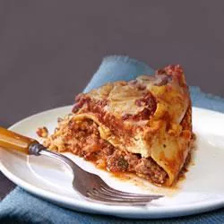

Slow-Cooker Lasagna

Source
Description
Homemade lasagna.... in the slow-cooker! Nothing better than coming home to this classic Italian dish being ready to eat.
Ingredients
- 1 (15 ounce) container POLLY-O Original Ricotta Cheese
- 1 (7 ounce) package KRAFT 2% Milk Shredded Mozzarella Cheese, divided
- ¼ cup KRAFT Grated Parmesan Cheese, divided
- 1 large egg
- 2 tablespoons chopped fresh parsley
- 1 pound ground beef
- 1 (24 ounce) jar spaghetti sauce
- 1 cup water
- 6 lasagna noodles, uncooked
Steps
- Mix ricotta cheese, 1 1/2 cups mozzarella cheese, 2 tablespoons Parmesan cheese, egg, and parsley in a medium bowl; set aside.
- Brown meat in large skillet; drain. Stir in spaghetti sauce and water.
- Spoon 1 cup meat sauce into a slow cooker; top with layers of half each of the noodles (broken to fit) and cheese mixture. Cover with 2 cups meat sauce. Top with remaining noodles (broken to fit), cheese mixture, and meat sauce. Cover with lid.
- Cook on LOW until liquid is absorbed, 4 to 6 hours. Sprinkle with remaining mozzarella and Parmesan; let stand, covered, until melted, about 10 minutes.